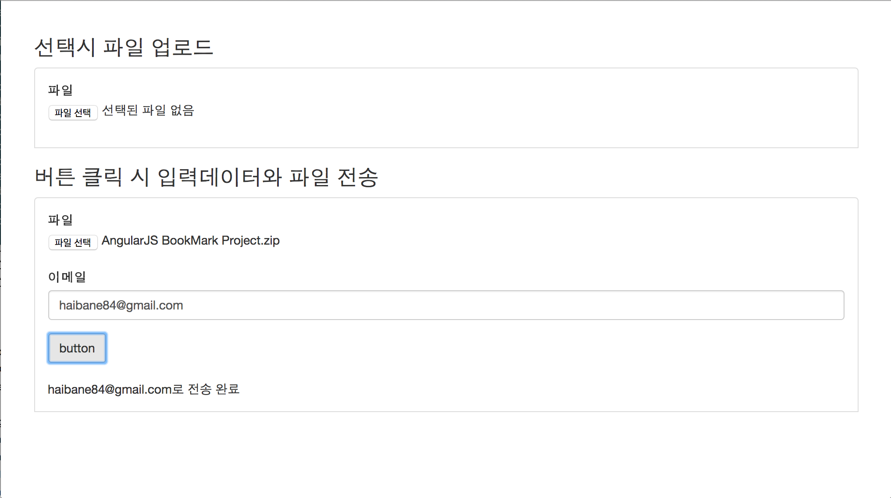

AngularJS 파일 업로드 지시자를 이용하여 비동기 파일 업로드 처리하기
웹 어플리케이션을 개발하다보면 브라우저에서 파일을 전송하여 서버에 저장해야할 케이스가 종종있다. 대체로 동기방식은 멀티파일 업로드처리를 하는데 이 경우 화면이 리플레쉬되고 특정 페이지로 이동을 한다. 그래서 단일페이지 웹 어플리케이션에서는 비동기 파일 업로드가 필요하다. 하지만 AngularJS 만으론 이러한 요구사항을 처리하기엔 부족함이 많다. 우리는 이번 튜토리얼에서 Danial Farid가 만들어서 오픈소스(MIT License)로 공개한 angular-file-upload를 이용하여 비동기 파일업로드 처리를 알아보겠다.
angular-file-upload 설치하기
angular-file-upload를 다운로드는 다음 주소에서 받거나 bower를 이용할 수 있다.
- danialfarid/angular-file-upload-bower 릴리즈 브렌치에서 다운로드
bower install ng-file-upload --save
다운로드를 완료하였다면 다음과 같이 스크립트 태그를 적용할 HTML 파일을 추가한다.
<!-- 최신 브라우저는 progress 이벤트를 사용하기위해서 필요하고 구 브라우저(IE8과 같은)는 HTML5 업로드 기능을 위해서 필요하다. -->
<script src="angular-file-upload-shim.min.js"></script>
<script src="angular.min.js"></script>
<script src="angular-file-upload.min.js"></script>IE8, IE9 지원
angular-file-upload 모듈은 progress 이벤트를 처리하거나 HTML5 지원을 위한 angular-file-upload-shim.min.js을 별도로 제공한다. 파일이 업로드되는 progress처리를 하지 않는다변 shim 파일이 필요가 없고 IE8과 IE9은 shim과 함께 FileAPI가 필요하다.
<script>
//IE8과 IE9을 지원하기 위해서는 angular-file-upload-shim(.min).js 전에 작성이 필요하다.
FileAPI = {
//jsPath 또는 jsUrl 둘 중 원하는거 하나만 사용.
jsPath: '/js/FileAPI.min.js/folder/',
jsUrl: 'yourcdn.com/js/FileAPI.min.js',
//staticPath 또는 flashUrl 둘 중 원하는거 하나만 사용.
staticPath: '/flash/FileAPI.flash.swf/folder/',
flashUrl: 'yourcdn.com/js/FileAPI.flash.swf',
//forceLoad: true, html5: false //HTML5 브라우저에서 디버그 하려면 설정
}
</script>
<script src="angular-file-upload-shim.min.js"></script>...그럼 간단한 파일 업로드 클라이언트를 만들어보자. 다음과 같이 upload-client.html 파일을 만든다.
<!DOCTYPE html>
<html ng-app="demoApp">
<head>
<!-- 생략 -->
<script src="libs/ng-file-upload/angular-file-upload-shim.min.js"></script>
<script type="text/javascript" src="libs/angular/angular.min.js"></script>
<script src="libs/ng-file-upload/angular-file-upload.min.js"></script>
<script>
angular.module('demoApp', ['angularFileUpload'])
//angularFileUpload 모듈을 사용하면 $upload 서비스를 주입받아 사용할 수 있다.
.controller('mainCtrl', ['$scope','$upload', function ($scope, $upload) {
}]);
</script>
</head>
<body>
<div class="container" ng-controller="mainCtrl">
<div class="row">
<div class="col-xs-12 col-sm-12 col-md-12 col-lg-12">
</div>
</div>
</div>
</body>
</html>파일업로드 서버 구성
파일 업로드를 하려면 업로드 서버가 있어야 한다. Java든 PHP든 어떠한 서버든 상관없지다. 본 튜토리얼에서는 node.js와 express.js로 파일 서버를 만들었다.
파일 업로드 서버는 /upload와 /uploadWithData에 업로드 요청을 하면된다. 자세현 구현 코드는 GitHub web-angular-sample 프로젝트의 fileupload Branch에서 upload-server.js를 참고하기 바란다.
파일선택시 즉각 비동기 업로드
그럼 이제 실제 파일 업로드 처리를 해보자. upload-client.html에 다음과 같이 코드를 수정하자.
<!-- 생략 -->
<script>
angular.module('demoApp', ['angularFileUpload'])
.controller('mainCtrl', ['$scope','$upload', function ($scope, $upload) {
//파일이 선택되면 호출된다. 이때 $files인자를 통해 파일 데이터를 배열로 받아온다.
$scope.onFileSelect = function($files) {
for (var i = 0; i < $files.length; i++) {
var file = $files[i];
//$upload 서비스를 통해 실제 비동기 업로드를 수행한다. 이떄 HTTP 경로와 메소드 그리고 해당 파일 필드이름을 지정할 수 있다.
$scope.upload = $upload.upload({
url: '/upload', //경로
method: 'POST', //메소드
file:file, //파일
fileFormDataName : 'fileField1', //필드이름
}).success(function(data, status, headers, config) {
//upload를 하고 성공시 콜백처리를 success 메소드를 통해 할 수 있다.
console.log(data);
});
}
};
}]);
</script>
</head>
<body>
<div class="container" ng-controller="mainCtrl">
<div class="row">
<div class="col-xs-12 col-sm-12 col-md-12 col-lg-12">
<h3>선택시 파일 업로드</h3>
<div class="example">
<form role="form">
<div class="form-group">
<label>파일</label>
<!-- file 타입에 ng-file-select 지시자를 사용하면 파일이 선택될 때 마다 호출할 표현식을 값으로 줄 수 있다. 여기선 $scope의 onFileSelect 메소드를 호출한다.-->
<input type="file" ng-file-select="onFileSelect($files)">
</div>
</form>
</div>
</div>
</div>
</div>
</body>
</html>이제 브라우저에서 upload-client.html를 열어보자. node.js로 서버를 구동하려면 커맨드 창에서 다음과 같이 명령어를 입력한다.
node upload-server.js #에러가 발생하면 npm install을 하도록 한다.
파일을 하나 업로드하면 아래 그림과 같이 브라우저 콘솔창에 성공 메시지를 출력할 것이다.

그리고 서버폴더에서 uploads 폴더에 가보면 다음과 같이 업로드한 파일이 있을 것이다.

파일과 데이터를 동시에 비동기 전송
이번에는 특정 입력박스의 입력값과 파일을 버튼 클릭 시 전송하도록 하겠다. 아래 코드와 같이 코드를 수정하자.
<!DOCTYPE html>
<html ng-app="demoApp">
<!-- 생략 -->
<script src="libs/ng-file-upload/angular-file-upload-shim.min.js"></script>
<script type="text/javascript" src="libs/angular/angular.min.js"></script>
<script src="libs/ng-file-upload/angular-file-upload.min.js"></script>
<script>
angular.module('demoApp', ['angularFileUpload'])
.controller('mainCtrl', ['$scope','$upload', function ($scope, $upload) {
//생략
//파일을 선택하면 전송하기 전에 파일 데이터를 보관해두었다가 send 호출 시 upload 서비스를 이용하여 전송
$scope.onFileSelect2 = function($files) {
$scope.selectedFile = $files[0];
};
$scope.send = function () {
if($scope.selectedFile !== undefined){
$scope.upload = $upload.upload({
url: '/uploadWithData',
method: 'POST',
file:$scope.selectedFile,
//data 속성으로 별도의 데이터를 보냄.
data : {
email : $scope.email
},
fileFormDataName : 'fileField1',
}).success(function(data, status, headers, config) {
//서버에서 전송시 보낸 email을 그대로 응답 데이터로 전달함.
$scope.successMsg = data.email+"로 전송 완료";
});
}
};
}]);
</script>
</head>
<body>
<div class="container" ng-controller="mainCtrl">
<div class="row">
<div class="col-xs-12 col-sm-12 col-md-12 col-lg-12">
<!-- 생략 -->
<h3>버튼 클릭 시 입력데이터와 파일 전송</h3>
<div class="example">
<form role="form" name="uploadForm">
<div class="form-group">
<label>파일</label>
<input type="file" ng-file-select="onFileSelect2($files)">
<br>
<label>이메일</label>
<input type="email" ng-model="email" class="form-control" placeholder="이메일">
</div>
<!-- 버튼 클릭시 send 메소드 호출 -->
<button type="button" class="btn btn-default" ng-click="send()" ng-disabled="selectedFile == undefined">button</button>
</form>
<br>
<!-- 전송 성공시 메시지 출력 -->
<div>
{{ successMsg }}
</div>
</div>
</div>
</div>
</div>
</body>
</html>다시 브라우저에서 파일을 선택하고 이메일을 입력해보자. 이번에는 파일이 바로 전송되지 않을 것이다. button을 클릭하면 파일이 전송되는 것을 다음 그림과 같이 확인할 수 있다.
